My Projects
Food preservation system
Figma design
In CPIT-250, we have designed an app that help to reduce food waste in a way to donate it for needers. You can sign in the app wether your a needer or a donator.
Team Members:
- Abdulrahman Barashid
- Waleed Albeladi
- Khalid Alghamdi

Cats app
Mobile App
I used flutter and dart to devolep my first app, was about Cats and its image. Then you can see every cat in details, like age, weight and etc.
Team Members:
- Abdulrahman Barashid
Database for a Furniture Store
Database
In CPIT-240, we developed a database for a furniture shop, gaining valuable insights into database management. The system streamlined inventory, customer data, sales, and supplier information, ensuring efficient tracking and operations. We designed a relational model linking products, customers, orders, and suppliers for seamless data retrieval. I applied normalization techniques for optimization and implemented security measures to protect sensitive data. This project enhanced my understanding of real-world database design and its business applications.
Team Members:
- Abdulrahman Barashid
- Yousef Samman
- Mazen Alshehri
- Ammar Binyamin
- Ali Binyamin
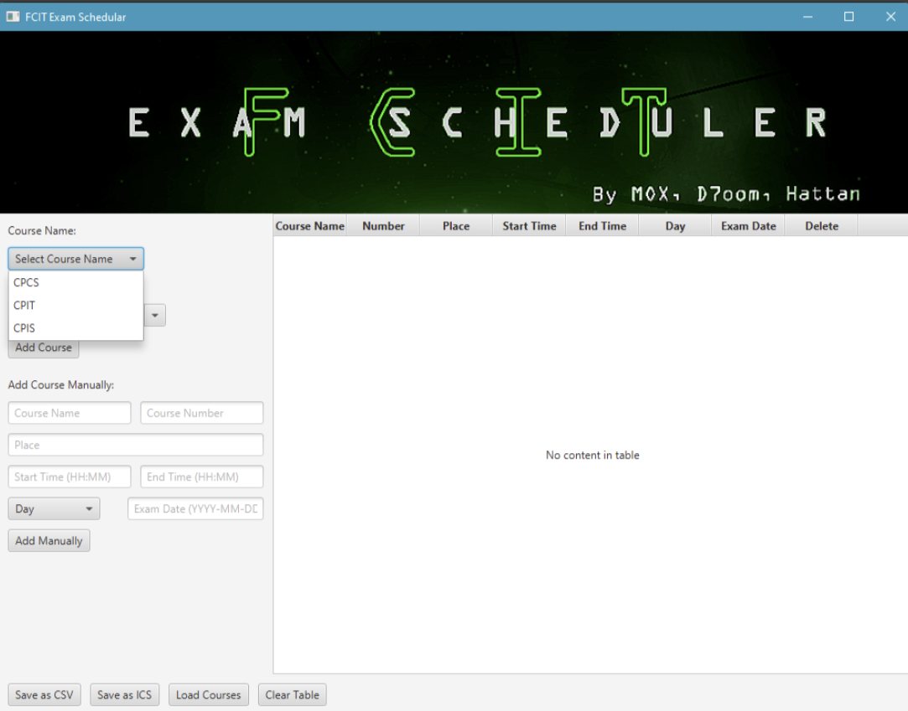
FCIT Exam Schedular
GUI using JAVAFX
in CPIT-305, we developed Exam Scheduler which is an application that helps FCIT students or academic institutions efficiently organize exam schedules. The project simplifies the process of organizing and accessing exam schedules, reducing manual effort and minimizing errors and enhanced user experience.
Team Members:
- Abdulrahman Barashid
- Mohammad Alkhayat
- Hattan Alzahrani
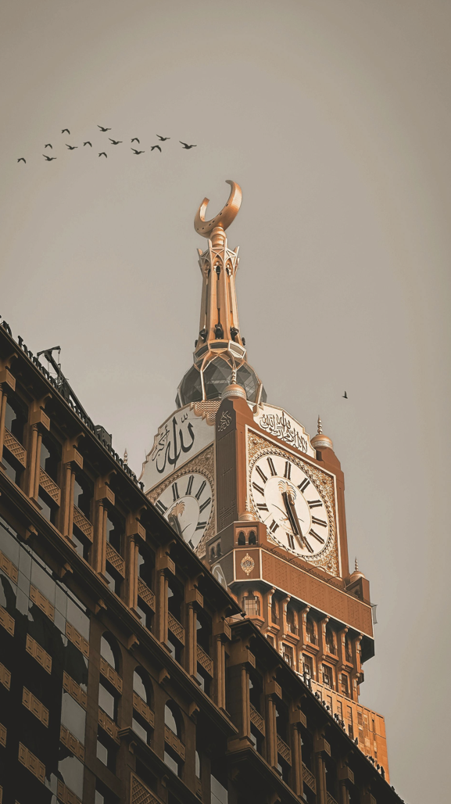
Makkah Path
Mobile App (First release)
in CPIT-252, with the use of design patterns we developed an app that aims to improve transportation for both Umrah performers and visitors to Makkah. By incorporating a bus reservation system and QR code technology, we ensure that transportation is safer, more comfortable, and more convenient.
Team Members:
- Abdulrahman Barashid
- Mohammad Alkhayat
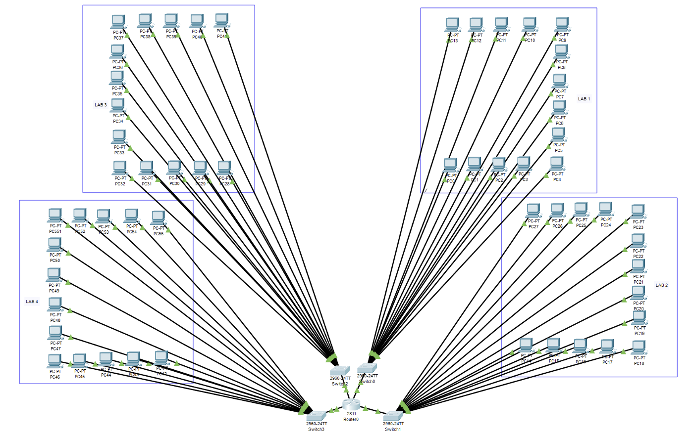
Network
Packet tracer
in CPIT-370, we designined and implemented a network infrastructure for 4 labs in a building, each lab contains 14 devices (hosts), and there is room for the router and the switch in which our network system will be controlled and maintained.
Team Members:
- Abdulrahman Barashid
- Muayad Bajandooh
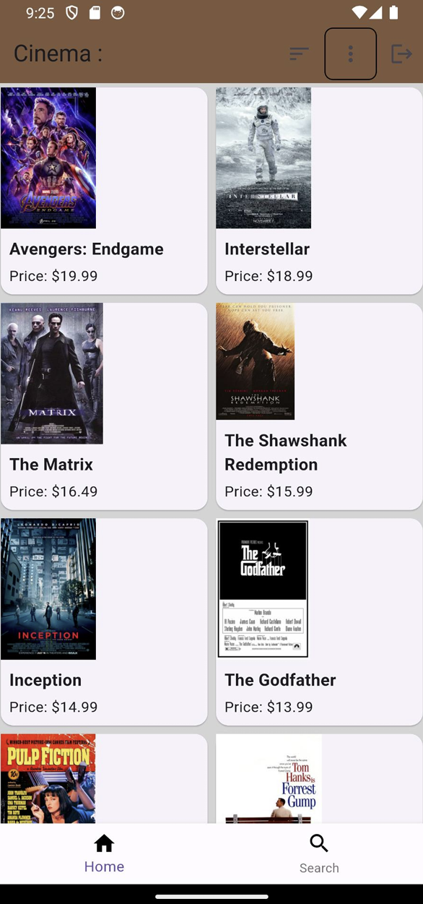
cinema reservation app
Mobile App
In CPIT-251, we developed a cinema reservation app that brings multiple cinema companies onto one platform, offering diverse movie options with personalized recommendations. It provides real-time showtimes, seat availability, and a dynamic pricing system with special discounts. The app enhances the movie-going experience by simplifying reservations and fostering a community for film enthusiasts.
Team Members:
- Abdulrahman Barashid
- Mohammad Alkhayat
- Mazen Alshehri
- Hattan Alzahrani
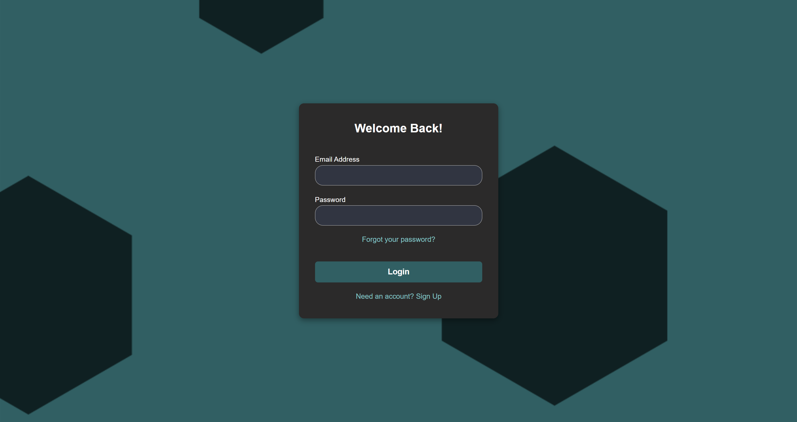

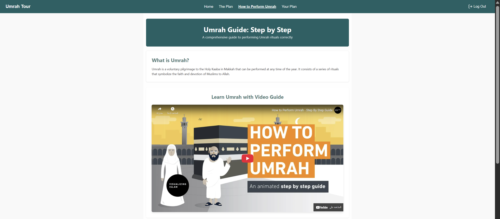
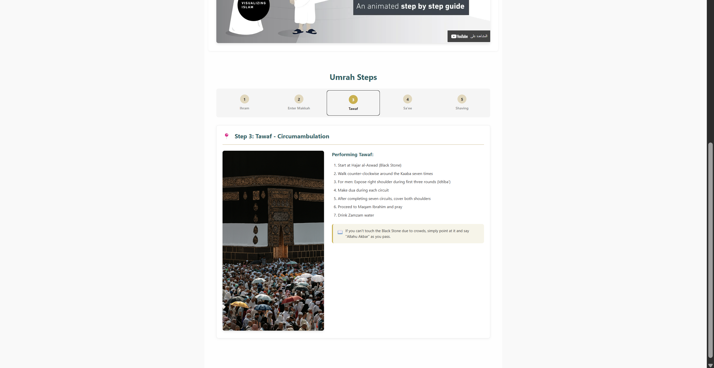
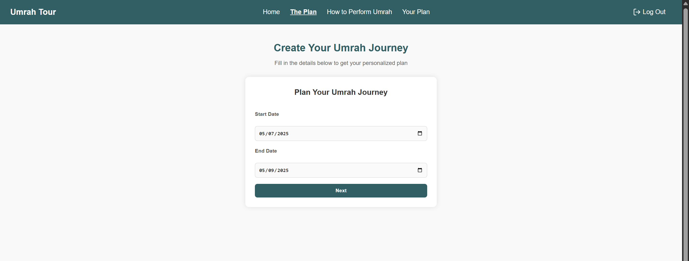
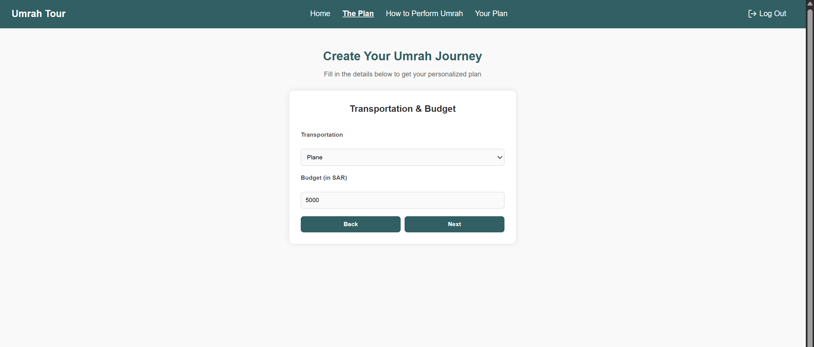
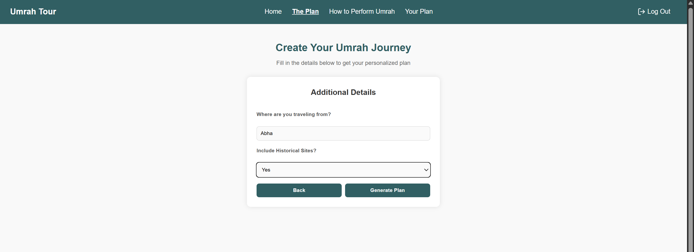
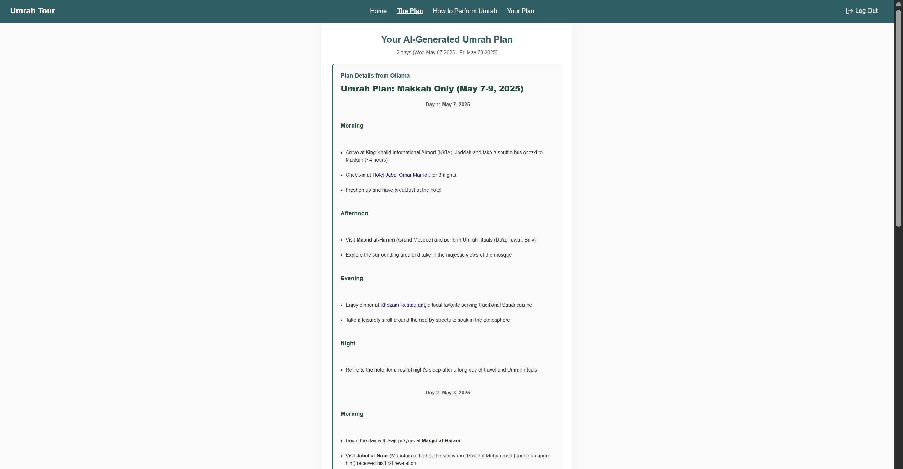
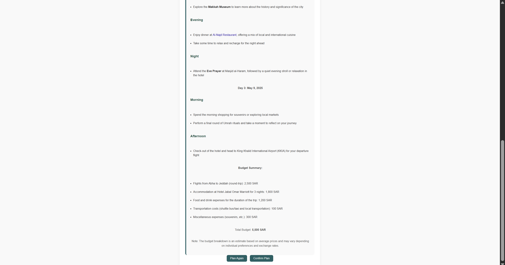
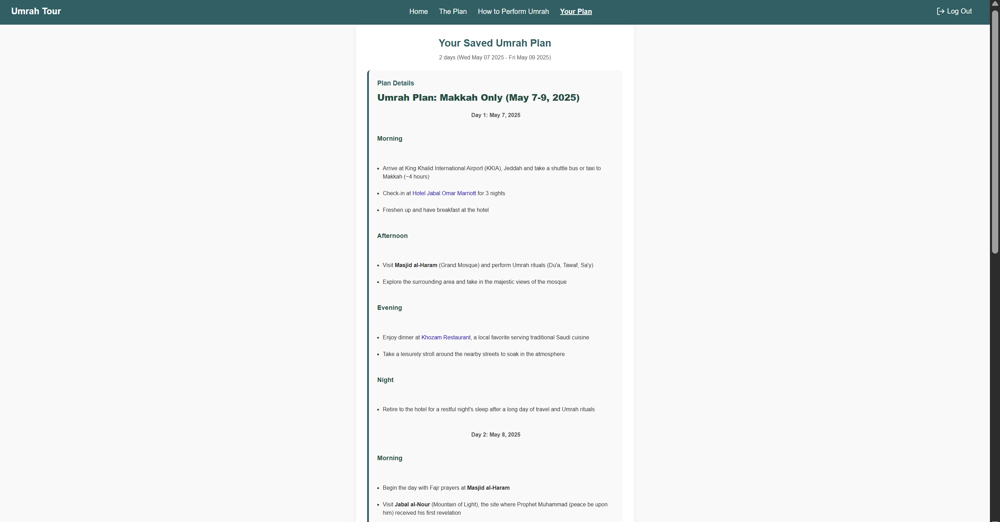
Makkah tour
Web App
In CPIT-405, we developed a web application using React. Designed to help Muslims plan a smooth and personalized Umrah journey. It uses AI to generate smart itineraries based on user input such as travel dates, budget, city, and preferences for transportation and historical sites.
Team Members:
- Abdulrahman Barashid
- Mazen Alshehri

KAU Hospital Management Database System
Database
Designed and implemented a full-stack hospital management database system as part of an administration database course CPIT-345. The system was deployed on both SQL Server and Azure SQL Database, demonstrating proficiency across local and cloud database environments. Key implementation areas included role-based access control with five distinct user roles (admin, doctor, nurse, receptionist, and auditor) to enforce least-privilege data access, fine-grained auditing to monitor and log sensitive operations and a comprehensive backup and recovery strategy combining full, transaction log, and incremental backups to ensure data resilience. This project strengthened practical skills in database design, security implementation, access control management, and cloud database administration using Azure.
Team Members:
- Abdulrahman Barashid
- Yousef Samman
- Abdulrahman Monaquel


Sentiment Analysis of Twitter Posts Using Machine Learning
Data Mining
Built a sentiment classification system for CPIT440 using the Sentiment140 dataset, training on a cleaned sample of approximately 9,900 tweets. Implemented a full NLP pipeline including text cleaning, tokenization, stopword removal, and TF-IDF feature extraction (2,000 unigram features), then trained and evaluated Multinomial Naive Bayes and Logistic Regression classifiers with 3-fold cross-validation. Logistic Regression achieved the best test accuracy (~72.8%), slightly outperforming Naive Bayes (~71.9%). Conducted exploratory data analysis including class distribution, tweet length histograms, and word clouds, and produced confusion matrices to analyze model errors. Used Python, pandas, NLTK, scikit-learn, matplotlib, and seaborn throughout.
Team Members:
- Abdulrahman Barashid
- Waleed Albeladi
- Mazen Alshehri

Security Awareness Campaign: Password Security & MFA
Information Security
Co-led a 3-day cybersecurity awareness campaign for CPIT-425, targeting password security and MFA adoption among Faculty students. Surveyed 50 students to identify knowledge gaps (48% had no MFA enabled, 40% unfamiliar with password managers), then created and distributed a bilingual awareness poster and an instructional video covering Have I Been Pwned, Google 2FA setup, and Bitwarden.
Team Members:
- Abdulrahman Barashid
- Amer Bugshan
- Abdulrahman Monaquel

Personalized Umrah Itinerary Planner App - Cloud Deployment
Cloud Computing Architecture
Designed and deployed a highly available, scalable cloud architecture on Microsoft Azure for "Pilgrim Plan," a React-based Umrah itinerary planning application with an AI-powered backend. The deployment used two compute types (Virtual Machines for the frontend and a serverless Function App running a Python AI server) and two storage types (OS disk/block storage and Blob/object storage). The architecture incorporated Application Gateway-based load balancing across multiple VMs for fault tolerance. Networking and security were managed through virtual networks and network security groups. The project demonstrated practical skills in cloud architecture design, high availability planning, and balancing elastic versus fixed-cost compute strategies.
Team Members:
- Abdulrahman Barashid
- Abdulrahman Monaquel
- Mazen Alshehri


Educational Horror Game
Senior Project "Lost Byte"
Co-developed "Lost Byte," a first-person psychological horror game set in KAU's FCIT building, combining immersive gameplay with educational IT puzzles. The game was built in Unreal Engine 5 using C++ and Blueprints, with 3D assets created in Blender. Implemented core gameplay systems including an AI-driven chaser enemy, a jumpscare sequence with camera takeover logic, and a power-drain/lighting system with frame-rate-independent countdown mechanics. Built a companion React website featuring OTP-based email verification (KAU and PayPal flows), Firebase/Firestore integration for one-time Steam key distribution, and a game gallery, deployed via GitHub Actions with automated CI/CD. Used for version control via Diversion and Git.
Team Members:
- Abdulrahman Barashid
- Fahad AlHawas
- Rayan AlShehri